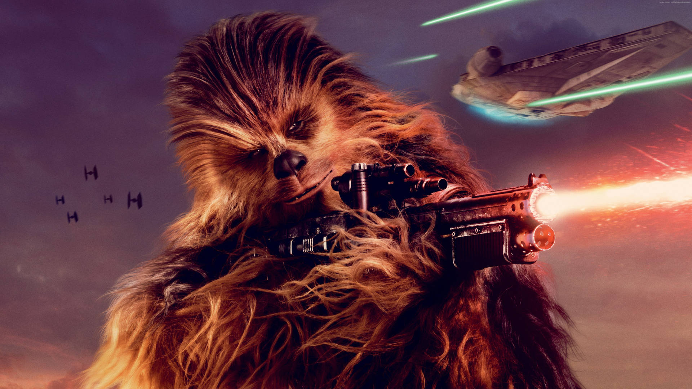
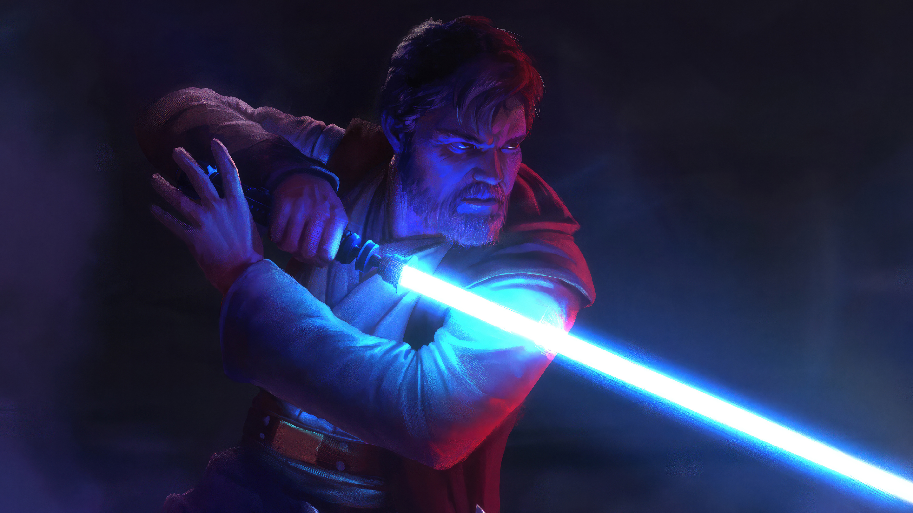
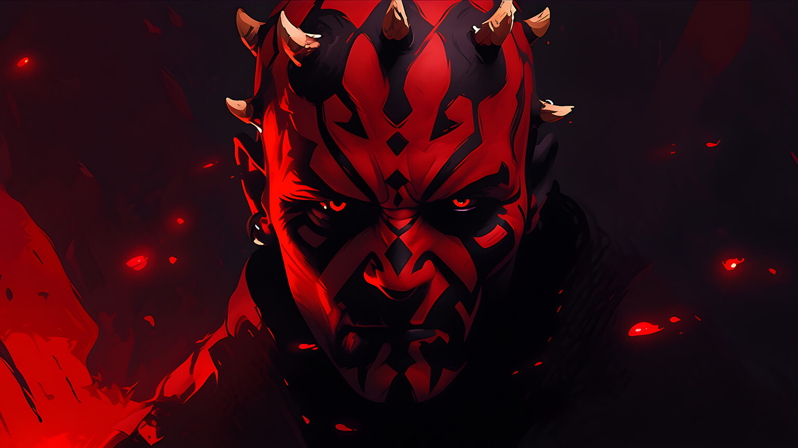
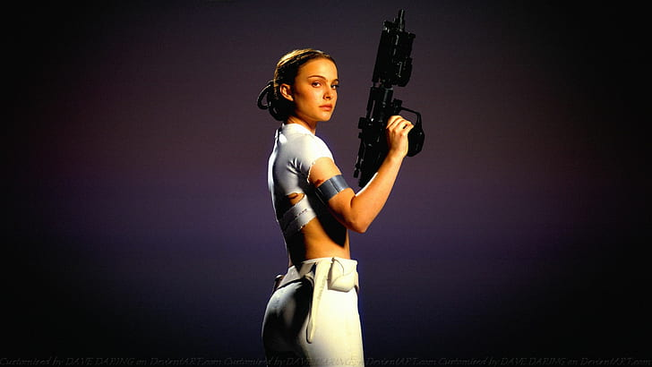
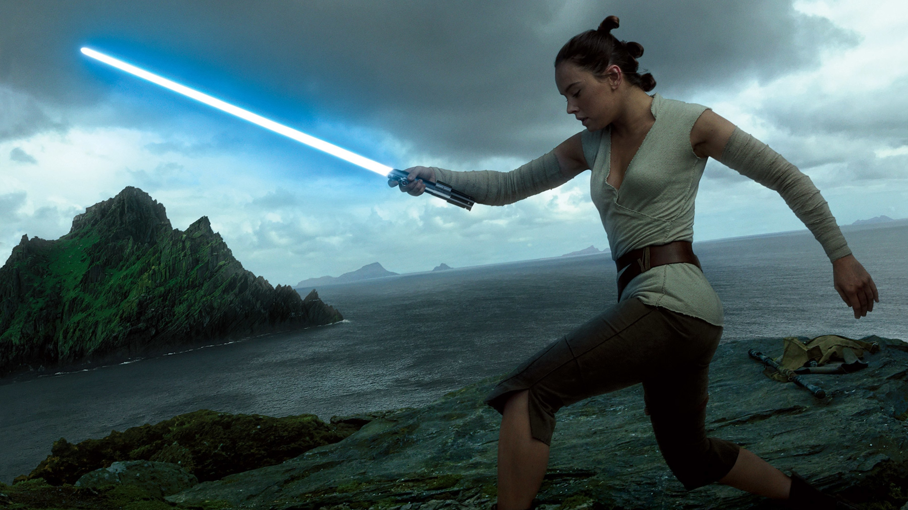
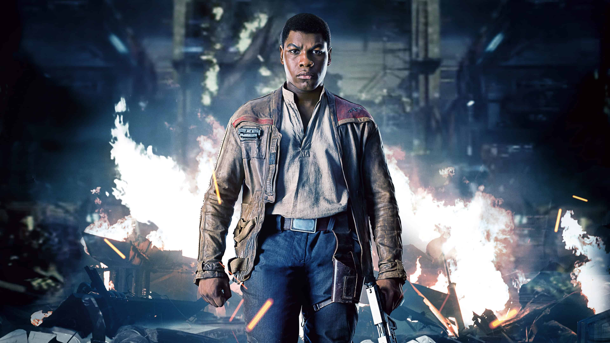
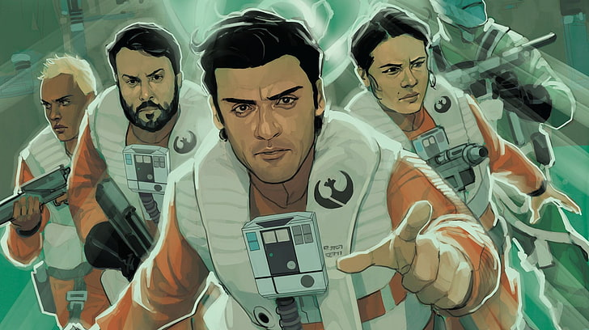
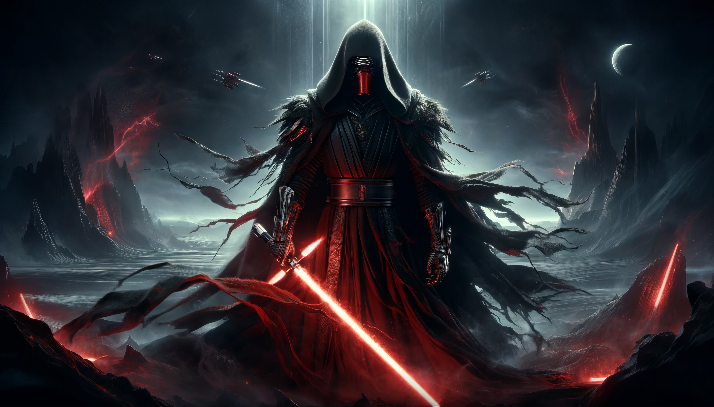

Personagens Principais

Luke Skywalker
Um herói relutante que se tornou o último Jedi da galáxia, Luke Skywalker é o filho de Anakin Skywalker e Padmé Amidala. Ele foi treinado por Obi-Wan Kenobi e Yoda e desempenhou um papel crucial na derrota do Império Galáctico.
Curiosidades
- Originalmente, Luke Skywalker foi concebido como uma garota chamada Starkiller.
- Mark Hamill, o ator que interpretou Luke, inicialmente pensou que Star Wars seria um filme para crianças.

Darth Vader
Anteriormente conhecido como Anakin Skywalker, Darth Vader é um dos vilões mais icônicos da história do cinema. Uma vez um Jedi promissor, ele foi corrompido pelo lado sombrio da Força e se tornou o braço direito do Imperador Palpatine, liderando a perseguição aos Jedi e ajudando a governar a galáxia como parte do Império.
Curiosidades
- Darth Vader é um dos poucos personagens a aparecer em todos os filmes principais de Star Wars.
- Ele é conhecido por sua respiração pesada, que se tornou um dos sons mais reconhecíveis da cultura pop.

Han Solo
Um contrabandista corajoso e carismático, Han Solo é o capitão da Millennium Falcon. Ele se junta à Rebelião contra o Império e se torna um herói fundamental na luta pela liberdade na galáxia.
Curiosidades
- A famosa frase "I have a bad feeling about this" ("Eu tenho um mau pressentimento sobre isso") é pronunciada por Han Solo em todos os filmes principais de Star Wars.
- Han Solo venceu a Millennium Falcon em um jogo de sabacc contra Lando Calrissian.

Princesa Leia Organa
Líder da Aliança Rebelde, Leia Organa é uma princesa de Alderaan e uma das maiores heroínas de Star Wars. Ela é inteligente, corajosa e uma estrategista brilhante na luta contra o Império.
Curiosidades
- Leia é uma das primeiras princesas do cinema a não ser retratada como uma donzela em perigo, mas como uma líder e guerreira.
- Carrie Fisher, a atriz que interpretou Leia, era conhecida por sua personalidade forte e senso de humor, características que ela trouxe para o papel.

Mestre Yoda
Um dos mais poderosos e sábios Jedi, Yoda é conhecido por sua pequena estatura, mas grande sabedoria. Ele treinou gerações de Jedi e desempenhou um papel crucial na luta contra o lado sombrio da Força.
Curiosidades
- Yoda fala em uma gramática incomum, usando uma estrutura de frases invertida.
- Ele é um dos poucos personagens a aparecer em todos os filmes da trilogia original e da trilogia prequela de Star Wars.

Chewbacca
Chewbacca, ou "Chewie", é um Wookiee, uma espécie de peludos e gigantes da galáxia. Ele é o copiloto da Millennium Falcon e um amigo leal de Han Solo. Chewbacca é conhecido por sua força física e lealdade inabalável.
Curiosidades
- Chewbacca foi inspirado pelo cachorro de George Lucas, Indiana, um pastor malinois.
- Ele é conhecido por seu rugido característico, que é uma combinação de grunhidos de diferentes animais, incluindo ursos, guaxinins e leões.

Obi-Wan Kenobi
Um lendário Cavaleiro Jedi, Obi-Wan Kenobi foi o mestre de Anakin Skywalker e, mais tarde, de Luke Skywalker. Ele desempenhou um papel vital na luta contra o Império Galáctico e na formação de novos Jedi.
Curiosidades
- Obi-Wan Kenobi é interpretado por Alec Guinness na trilogia original e por Ewan McGregor na trilogia prequela.
- Sua frase "A Força estará sempre com você" tornou-se uma das citações mais memoráveis da franquia.

Darth Maul
Um dos Sith mais temidos da galáxia, Darth Maul é conhecido por seu visual distintivo, incluindo pele vermelha e chifres. Ele é um mestre do combate com sabre de luz e serviu como aprendiz de Darth Sidious.
Curiosidades
- Darth Maul é famoso por seu sabre de luz de lâmina dupla, uma arma rara na ordem dos Sith.
- Ele sobreviveu à sua aparente morte em "A Ameaça Fantasma" e ressurgiu em outras mídias, incluindo a série animada "Star Wars: The Clone Wars".

Padmé Amidala
Uma líder política corajosa e nobre, Padmé Amidala foi a rainha de Naboo e, mais tarde, uma senadora galáctica. Ela desempenhou um papel vital na luta contra a ascensão do Império Galáctico e é a mãe de Luke Skywalker e Leia Organa.
Curiosidades
- Padmé é conhecida por suas elaboradas vestimentas e penteados, que se tornaram icônicos na cultura pop.
- Ela é retratada por Natalie Portman na trilogia prequela de Star Wars.

Rey
Uma jovem destemida com uma conexão poderosa com a Força, Rey é a protagonista da trilogia sequela de Star Wars. Ela é uma catadora que se torna uma poderosa Jedi e desempenha um papel fundamental na luta contra a Primeira Ordem.
Curiosidades
- Rey é interpretada por Daisy Ridley e sua origem misteriosa é um dos principais mistérios da trilogia sequela.
- Ela é conhecida por seu staff de combate improvisado e sua habilidade com o sabre de luz.

Finn
Um ex-stormtrooper que desertou da Primeira Ordem, Finn é um dos principais aliados de Rey na luta contra o mal. Ele é corajoso, leal e está determinado a fazer a coisa certa, mesmo que isso signifique enfrentar seu passado como soldado do Império.
Curiosidades
- Finn é interpretado por John Boyega e sua história de redenção é uma parte central da trilogia sequela.
- Ele inicialmente era designado apenas por um número de identificação, FN-2187, antes de escolher o nome "Finn".

Poe Dameron
Um piloto habilidoso e um dos líderes da Resistência, Poe Dameron é conhecido por sua bravura e habilidade no combate aéreo. Ele é o melhor piloto da Resistência e desempenha um papel vital em muitas das batalhas contra a Primeira Ordem.
Curiosidades
- Poe Dameron é interpretado por Oscar Isaac e é o piloto de elite da Resistência, confiando na habilidade e na astúcia para superar os inimigos.
- Seu droid de confiança é o BB-8, um pequeno astromech que o acompanha em suas missões.

Kylo Ren
O mestre dos Cavaleiros de Ren e um poderoso usuário do lado sombrio da Força, Kylo Ren é o filho de Leia Organa e Han Solo. Ele é atormentado por conflitos internos e é determinado a seguir os passos de seu avô, Darth Vader, como um líder da Primeira Ordem.
Curiosidades
- Kylo Ren é interpretado por Adam Driver e é uma figura complexa, lutando com conflitos internos e tentando encontrar seu lugar na galáxia.
- Ele é conhecido por seu sabre de luz instável, que reflete sua natureza tumultuada.